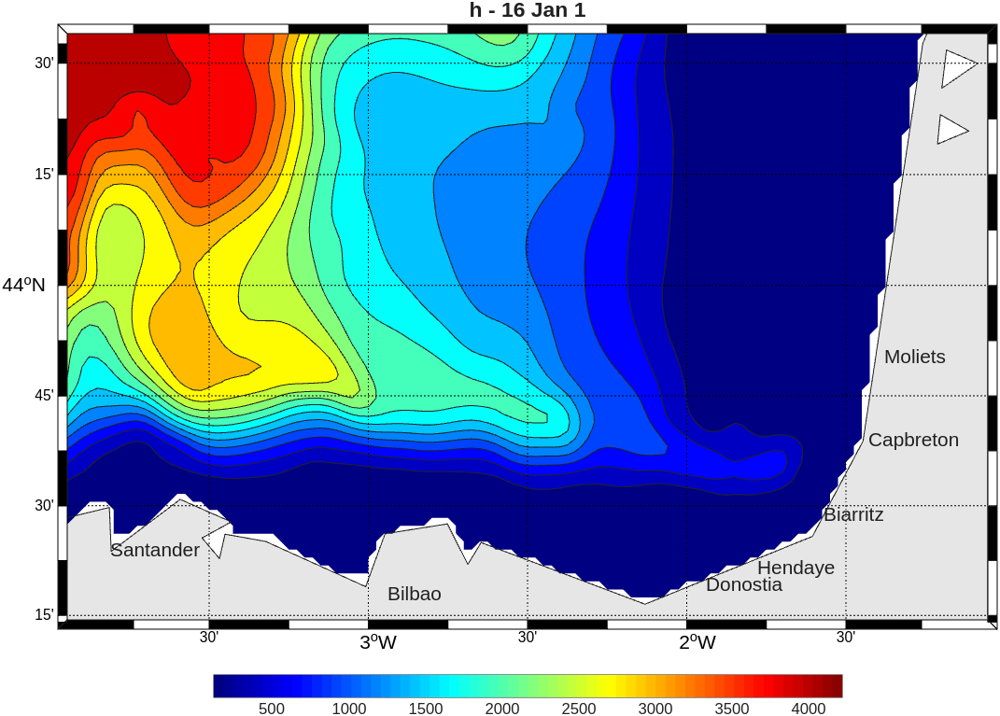
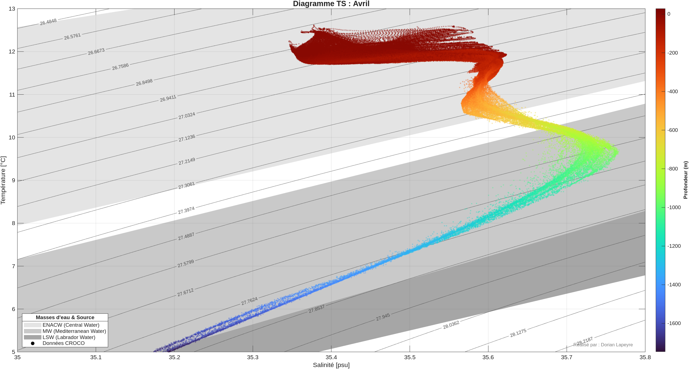

Projet de modélisation du Sud du Golfe de Gascogne
Cours OPB205 - Modélisation 3D Océanique

Bathymetry of my model (Bay of Biscay)

Analyse des résultats de simulation
Ce projet, réalisé dans le cadre de l'unité OPB205 (Modélisation 3D Océanique) au sein du Master Sciences de la Mer d'Aix-Marseille Université, porte sur l'étude de la dynamique océanique dans le sud du Golfe de Gascogne.
À l'aide du modèle numérique CROCO (Coastal and Regional Ocean Community model) configuré à haute résolution, ce travail analyse les structures de méso-échelle et la variabilité saisonnière des masses d'eau. L'étude se concentre particulièrement sur l'Iberian Poleward Current (IPC), un courant de pente crucial pour le transport de chaleur dans la région.
Le projet s'articule autour des axes d'analyse suivants :
- Validation hydrologique : Analyse des diagrammes Température-Salinité (T-S) pour identifier les masses d'eau (ENACW, MW, LSW).
- Dynamique saisonnière : Mise en évidence du contraste entre un jet stable en hiver et une désintégration tourbillonnaire en été.
- Analyse tourbillonnaire : Utilisation du paramètre d'Okubo-Weiss pour caractériser les structures de méso-échelle (tourbillons anticycloniques et cycloniques).
Dernière mise à jour : 01/05/2026